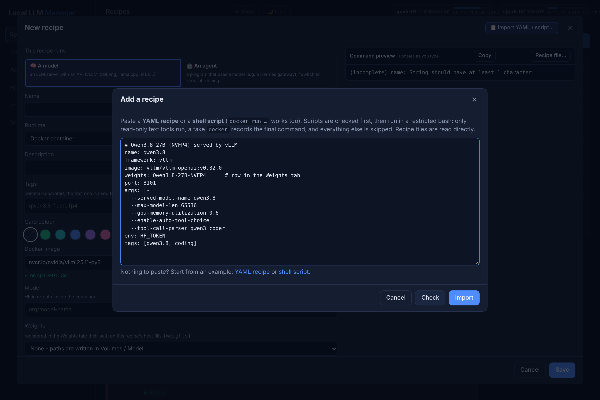
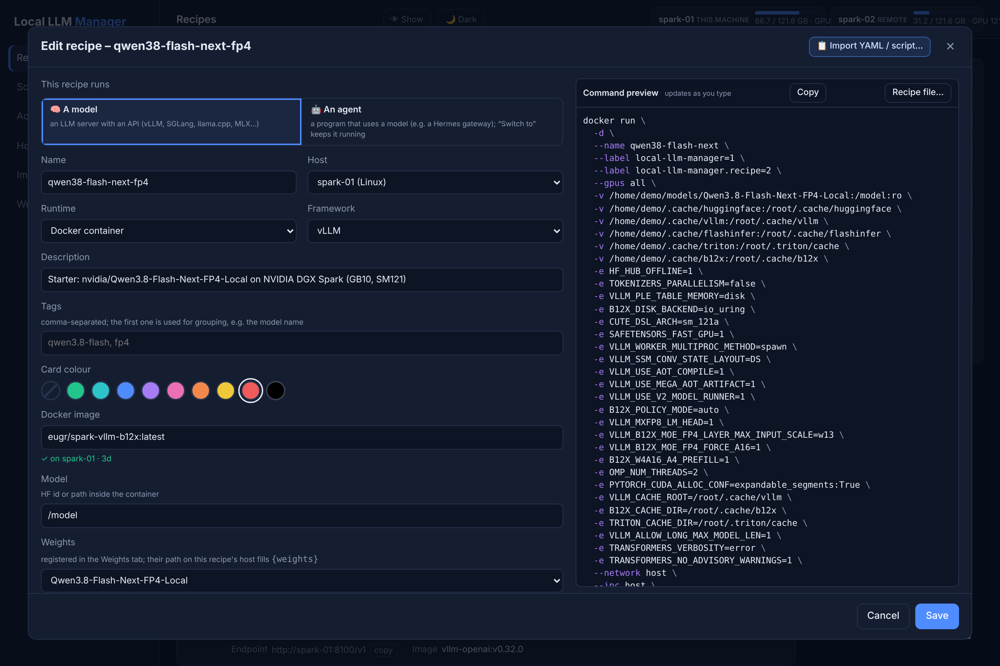

Recipes¶
Recipes save how to start a model server (vLLM, SGLang, llama.cpp, MLX, TensorFold or any image / native binary) as a Docker container or a native process. You can also import an existing start script, docker run command or compact JSON/YAML recipe file, and export any recipe the same way.
Supported engines¶
Every recipe names a framework:. The preset fills in the image, start command, container port and health
check, so a recipe only writes down what differs from it.
framework: |
Engine | Runs as | Default image / command | Good for |
|---|---|---|---|---|
vllm |
vLLM | Docker | nvcr.io/nvidia/vllm:25.11-py3, vllm serve |
NVIDIA GPUs, DGX Spark, high throughput |
sglang |
SGLang | Docker | lmsysorg/sglang:spark, python3 -m sglang.launch_server |
NVIDIA GPUs, models that ship SGLang support first |
llamacpp |
llama.cpp server | Docker | ghcr.io/ggml-org/llama.cpp:server-cuda |
.gguf files, smaller GPUs |
llamacpp-native |
llama.cpp server | native process | llama-server |
.gguf on a Mac or without Docker |
mlx |
MLX | native process | mlx_lm.server |
Macs with Apple silicon |
tensorfold |
TensorFold (experimental) | native process | tensorfold serve |
trying TensorFold |
custom / process-custom |
anything else | Docker / native process | your image or binary | other servers, agents such as a Hermes gateway |
vLLM, SGLang, llama.cpp and MLX all serve an OpenAI-compatible API at http://<host>:<port>/v1, so your
apps don't care which engine runs behind the endpoint. Live stats (tokens/s, requests, KV cache) come from
the server's /metrics: on by default in vLLM and TensorFold, add --enable-metrics for SGLang and
--metrics for llama.cpp.
Add a recipe: paste YAML or a shell script¶
There is no form to fill in. Click ＋ Add recipe (shortcut i) and paste one of:
Only what differs from the engine's defaults - the framework preset fills in the rest:
name: qwen3-8b
framework: vllm # vllm, sglang, llamacpp, mlx, tensorfold, custom, …
model: Qwen/Qwen3-8B # a Hugging Face id - or weights: <row in the Weights tab>
port: 8101
args: --max-model-len 32768 --gpu-memory-utilization 0.8
The start script you already use - a plain docker run …, or a script that computes values first:
#!/usr/bin/env bash
# Flint served by SGLang <- the first comment line becomes the description
docker run -d --gpus all -p 30000:30000 \
-v ~/.cache/huggingface:/root/.cache/huggingface \
lmsysorg/sglang:spark \
python3 -m sglang.launch_server --model-path RecursiveSI/flint --port 30000
The script is checked for risky lines first, then run with bash in a restricted mode in which only a
fake docker (that records the command) and read-only text tools really run. Nothing is started.

Under the box, YAML recipe and shell script insert an example of each to edit. After Import
the editor opens with every field filled and the exact docker run command beside it; check name, port
and paths, then Save. For a variant of a recipe that already works, use ⧉ Duplicate on its card.

Move recipes between machines and managers¶
A recipe is not tied to the machine it was written on:
| You want to… | Do this |
|---|---|
| Run it on another host of the same dashboard | Change its Host field. With {weights} the model folder follows: each host mounts its own path from the Weights tab. |
| Run it on several hosts at once and keep them equal | ⇉ on the card copies it to the hosts you tick; later changes to the original are offered to all copies, which can be restarted together. See Several machines. |
| Take it to another installation (a colleague's hub, a test instance) or into Git | In the editor, Recipe file… shows the recipe as compact YAML or JSON - Copy or Download it, and paste it into ＋ Add recipe on the other manager. |
| Tweak a recipe as text | Edit the YAML in Recipe file… and press Apply to editor; nothing is saved until you click Save. |
The recipe file contains everything the container needs - image, model, ports, arguments, environment
names, volumes and extra Docker flags - but no secret values: a bare HF_TOKEN line is filled from
the .env of the machine that runs it. Use weights: instead of fixed paths, and the same file works on
every machine that has the model.
Importable example recipes¶
Ready-made recipes you paste into the manager instead of typing fields: click ＋ Add recipe, paste a whole file from examples/recipes, review the draft (name, port, paths) and create.
Two formats are accepted:
.yaml/.json- compact recipe files. The manager's own fields: image, model, ports,args,env,volumes,docker_args, command, health path, tags. Missing settings come from the framework preset, so only what differs is written down.weights:names a registered Weights-tab entry (its per-host path fills{weights}); omitmodel:for the usual/modelmount, or set it to another path.host_port:is the port on the host (port:is shorthand for it).args,env,volumesanddocker_argscan be multi-line strings or lists..sh- starter scripts /docker runcommands. The manager checks the script, runs it with bash in a restricted mode and turns the captureddocker runinto the same fields.
The current examples:
| File | What it is |
|---|---|
qwen38-27b.yaml |
Qwen3.8 27B served by vLLM - a small compact recipe with registered weights. |
qwen38-flash-next-fp4.yaml |
Qwen3.8-Flash-Next-FP4 on an NVIDIA DGX Spark (GB10, SM121): b12x image, tuned flags, caches, tool calling. Compact form. |
nemotron-3.5-super-vl.yaml |
Nemotron-3.5-Super-VL with a draft model for speculative decoding; both models sit in one registered folder. |
hermes-agent-docker.yaml |
A Hermes Agent gateway as an agent recipe: its own port and data volume, no model or GPU. |
embeddinggemma-2-llamacpp.yaml |
EmbeddingGemma 2 (GGUF) as an OpenAI-compatible /v1/embeddings server via llama.cpp. |
sglang-flint.sh |
RecursiveSI/flint served natively by SGLang's sglang serve CLI, port 30000. |
sglang-flint-docker.sh |
The same model in the official lmsysorg/sglang Docker image (python3 -m sglang.launch_server). |
Before you start¶
- Weights: compact recipes name a registered entry (
weights:). Create it in the Weights tab with the folder on each host that runs the recipe, or change the name in the file. If a main model and a draft model share a folder, register that folder once, mount it, and pointmodel:at the subfolder (seenemotron-3.5-super-vl.yaml). Starter scripts mount a concrete folder; download the model there, or point the volume at your copy. The Weights tab finds model folders underDGXM_MODEL_DIRby itself and offers them under "Found on your hosts". - Ports: the port in
host_port:/port:/--portbecomes the recipe's port. Keep it the same across models you want to switch between, and give each--served-model-namea stable short name - then Switch to changes the model and your agents keep the same endpointhttp://<host>:<port>/v1. - Secrets: files list only bare names (e.g.
HF_TOKEN); put the values in the manager's.env(see Configuration). - vLLM images: the preset command starts with
vllm serve. Forvllm/vllm-openai(whose entrypoint already runsvllm serve), the manager drops the duplicate; images with a plainvllmentrypoint keepserve. The preview shows the actual command. - Recipes are a starting point: the flags are tuned for the machine they ran on. Check
--gpu-memory-utilization,--max-model-lenand--max-num-seqsagainst your GPU's memory.
Recipe list, filters and pinned recipes¶
The recipe list shows larger cards for quicker scanning. Use the top toolbar to:
- Search across name, model, host, image and tag.
- Filter by engine (vLLM, SGLang, llama.cpp, MLX, TensorFold, Custom – derived automatically from your recipes).
- Filter by kind (Models or Agents), by host and by tag.
- Sort by name, status or port.
Pinned recipes (★) appear in a dedicated “Pinned (always on top)” section at the top of the list. Blur and theme toggles live in the left sidebar.
More of your own? Drop new .yaml / .json files in examples/recipes and add a row to its table - or export one from the editor with Recipe file….